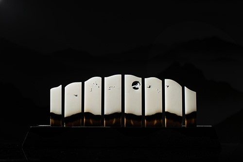

作者：赵显志 中国玉石雕刻大师
规格：最大为12.7*4.0*0.5cm 65g；最小为10.1*2.6*0.5cm 33g
《夜宴—顶级玉雕艺术品专场》拍品

《风行者》是2019“子冈杯”金奖之作。创作灵感源自于作者一次自驾采风之行，在漠北苍莽大地之上，御风而行，落日之中，大雁飞渡；采风归来后，赵大师恰好遇见一块和田玉原石，原料上半部凝润洁白，结构细腻，下半部虽为棕、黄色僵石，却分层明显，颜色与塞北大漠极为相似，大师当即决定用此原石进行艺术创作。一开始原石被切为四片，后经奥岩先生建议，每片又一分为二，总共八片，更易于进行大面积场景刻画。在工艺上，大胆使用透雕技法及画面分割的表现形式，使得画面连续又不失沉闷，富有节奏感、画面感和叙事感。
最终成品效果极佳。长河落日之中，数只大雁振翅远行。万里苍穹之下，一支车队行驶于浩瀚沙漠。作者摄取大漠中的典型景物，并赋予其鲜明的特征，描绘出粗犷雄浑的壮美意境。此件作品是赵显志大师继《浆声灯影江南巷》后又一里程碑式的原创力作。